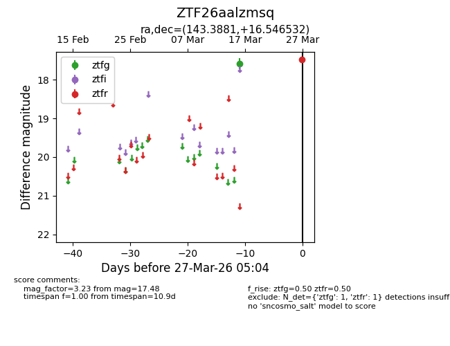
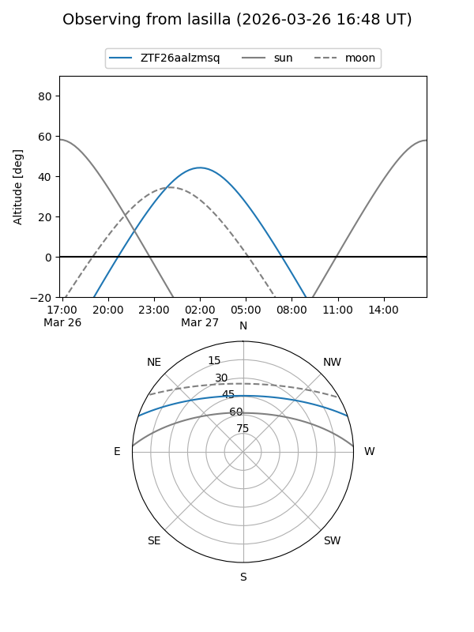
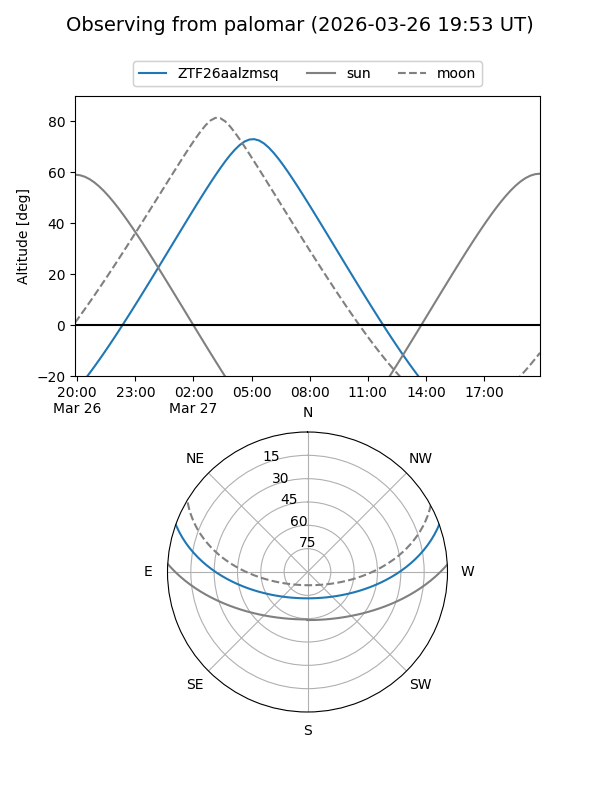

ZTF26aalzmsq
Target ZTF26aalzmsq at 2026-03-27 05:07
Aliases and brokers:
FINK: link
Lasair: link
ALeRCE: link
alt names
ZTF26aalzmsq (ztf,fink_ztf)
Coordinates:
equatorial (ra, dec) = 143.3881,+16.54653
equatorial (HMS+DMS) = 09:33:33.14,+16:32:47.51
galactic (l, b) = (215.3350,+43.17669)
Flags:
Photometry:
last ztfg=17.58, ztfr=17.48
1 ztfg, 1 ztfr detections
Lightcurve

Visibility


Additional plots